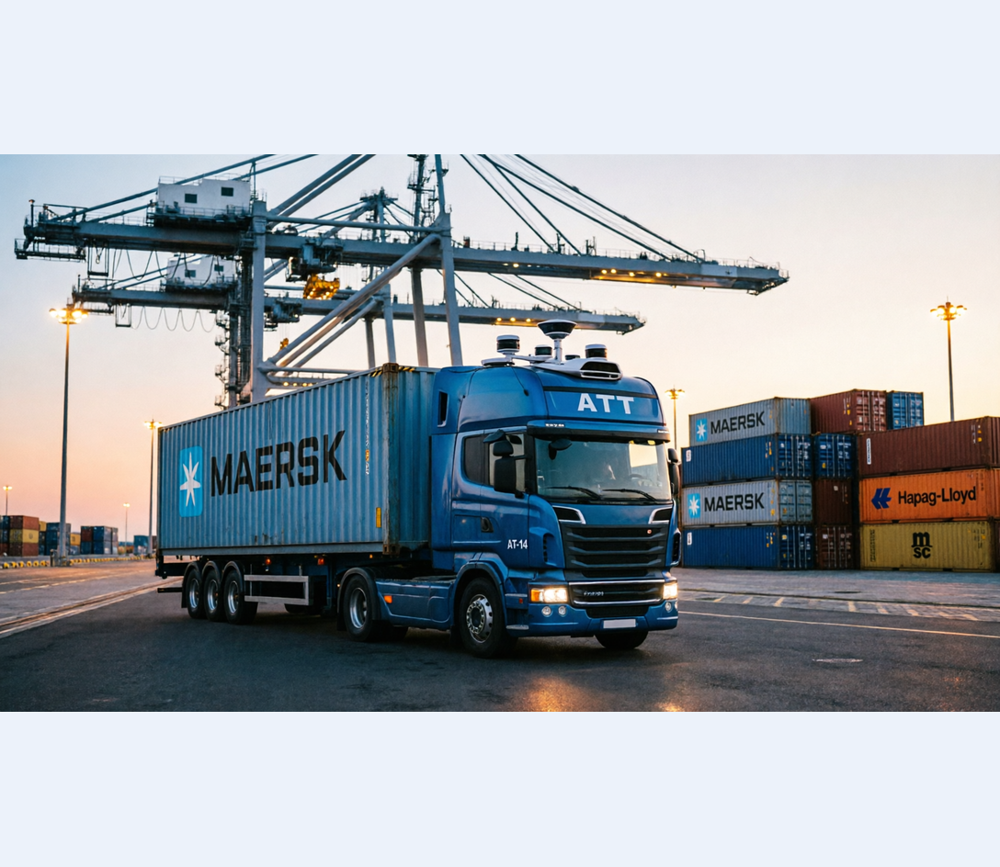

Autonomous Vehicles
Autonomous Terminal Trucks (ATT)
CV-based ATT scope at AIDRIVERS reflecting my participation in perception development for autonomous prime movers in port terminal operations.
C++, Python, ROS, PyTorch, ONNX, TensorRT, LiDAR, Camera, OCR, Sensor Fusion, PLC Communication
Project Overview
Participated in the development of perception modules supporting autonomous prime mover operations, with focus on robust environment understanding and alignment-related detection pipelines under real terminal conditions.
The Challenge
Terminal operations demand high precision under dynamic conditions: mixed traffic, varying weather/lighting, real-time latency limits, and strict reliability requirements for quay-crane handover and job execution.
The Solution
Contributed to deep-learning and point-cloud perception pipelines for ATT use cases, including optimized deployment workflows, adverse-weather robustness, and crane alignment related detection.
Key Achievements
- Designed and implemented a 2D environmental classifier for autonomous prime movers using PyTorch, improving perception capability in operational scenes.
- Applied optimization strategies and converted models to ONNX, then executed them with TensorRT for real-time deployment.
- Implemented heavy rain detection from 3D point cloud data to improve perception robustness in adverse weather.
- Engineered 3D point cloud-based crane detection and localization for QCrane and RTG alignment workflows of prime movers.